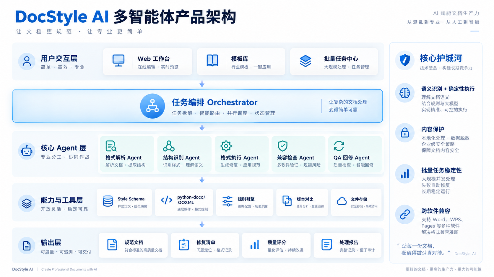
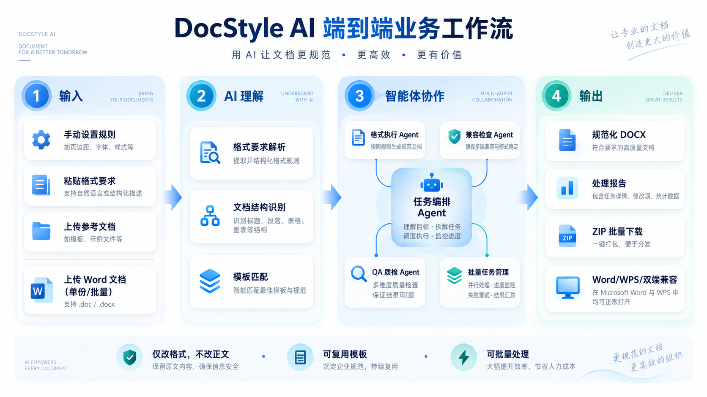
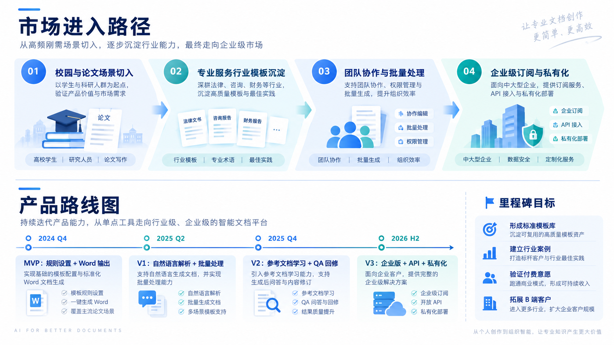

Word
- 适合手工编辑
- 规范依赖人工记忆
- 批量一致性有限
让 AI 负责理解文档，让规则引擎负责精确排版。
从格式要求到 DOCX 交付，把人工反复劳动转为可检查、可复用、可追溯的工作流。
标题、正文、图表、表注与资料来源混杂；不同机构和软件又有不同规范，人工逐项处理难以复用。
规则可以由设置、自然语言或参考 Word 定义；Agent 识别结构，确定性引擎执行格式修改，检查通过后再交付。
手动设置
自然语言
参考 Word
单文件
批量 DOCX
规则解析
结构识别
确定性文档引擎
内容保护
兼容性验证
DOCX
Change Report
从业务需求到可验证机器任务。
用户可以直接设置格式、以自然语言表达规范，或上传参考 Word；系统只在已定义的规则范围内修改格式，不把内容改写视为成功。
Orchestrator 维护状态与调度；每个 Agent 只负责明确、可检查的一段工作。
理解任务 · 拆解任务 · 调度 Agent · 维护检查点
自然语言与参考文档 → Style Rules
识别 Heading / Body / Caption / Source
调用格式工具，记录每一处修改
规则验证、内容保护、Word / WPS 检查

系统不把“生成完成”当作“任务完成”，而是把内容保护、格式验证和人工确认设计为明确关卡。
结构解析、分类、DOCX 编辑、表格处理与差异检查能力可复用、可组合。
正文前后比对；任何内容变化都阻止输出并留下可复核记录。
语义歧义、低置信度、规则冲突与 Unsupported OOXML 都交回人工确认。
计划基于公开论文规范、模板与 Word 示例构建测试集；未经验证的结果明确标注为 Pending 或 Target。
| Baseline | 语义理解 | 确定性执行 | QA | Batch |
|---|---|---|---|---|
| Rule-only | 弱 | 强 | 无 | 中 |
| LLM-only | 强 | 弱 | 弱 | 弱 |
| DocStyle AI | 强 | 强 | 有 | 强 |
Quantitative benchmark results: Pending
下方内容均为演示：它说明系统如何工作，而不是宣称已经得到实测结果。
10:32:11 PARSE 规则来源已识别（illustrative）
10:32:13 CLASSIFY 结构标签已生成（illustrative）
10:32:15 QA Content Protection Hook passed
10:32:16 PASS Awaiting Human Confirmation
工业化所处阶段和发展情况，决定企业转型发展的合理路径和实施机制。
Industry transition requires a clear implementation path.
| 指标 | 2021 | 2022 |
|---|---|---|
| 营业收入 | 12,530 | 14,208 |
资料来源: company report / 公开资料
工业化所处阶段和发展情况，决定企业转型发展的合理路径和实施机制。
Industry transition requires a clear implementation path.
| 指标 | 2021 | 2022 |
|---|---|---|
| 营业收入 | 12,530 | 14,208 |
资料来源：公司报告及公开资料。
Demo Illustration · Not a measured result
从基础 DOCX 排版起步，逐步扩展至批量、QA、参考学习、兼容策略与团队协作。
让 AI 负责理解文档，让规则引擎负责精确排版。
将格式规范转为可执行、可检查、可追溯的 DOCX 工作流。
DocStyle AI 的差异不是替代编辑器或通用对话，而是结合结构理解、确定性执行与 QA。
三种规则来源，六阶段工作流；只有通过内容保护与兼容检查，才进入输出。

Orchestrator 负责状态与调度；Parser、Structure、Execution、Compatibility、QA 分别完成不重叠的职责。
能力库负责专业能力复用；内容保护机制守住输出边界；低置信度、规则冲突与不支持结构均进入人工复核。
结构识别、规则满足、内容保持和兼容性均为待验证评价项；下表定义未来比较框架。
| 对比方案 | 语义理解 | 确定性执行 | 质量检查 | 批量处理 |
|---|---|---|---|---|
| 仅规则 | 弱 | 强 | 无 | 中 |
| 仅大模型 | 强 | 弱 | 弱 | 弱 |
| DocStyle AI | 强 | 强 | 有 | 强 |
定量基准结果：待验证
展示从格式混乱到规则受控输出的处理路径；示例过程和数字均不是实测运行。
Demo Illustration · Not a measured result

AI should understand. Software should execute.